Generating the Report
-
1Navigate to https://xbo.xenial.com/report-manager/search
-
2Click "My Reports"
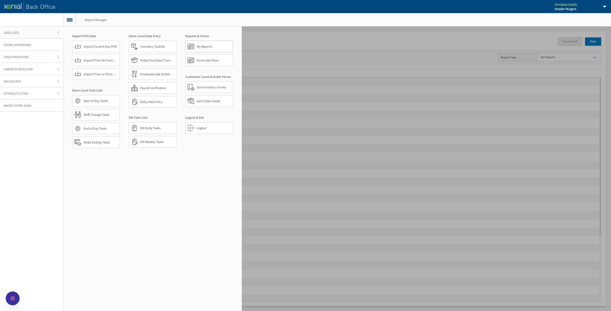
-
3Click "Daily Food Variance," "Weekly Food Variance" or "Weekly Paper Variance"
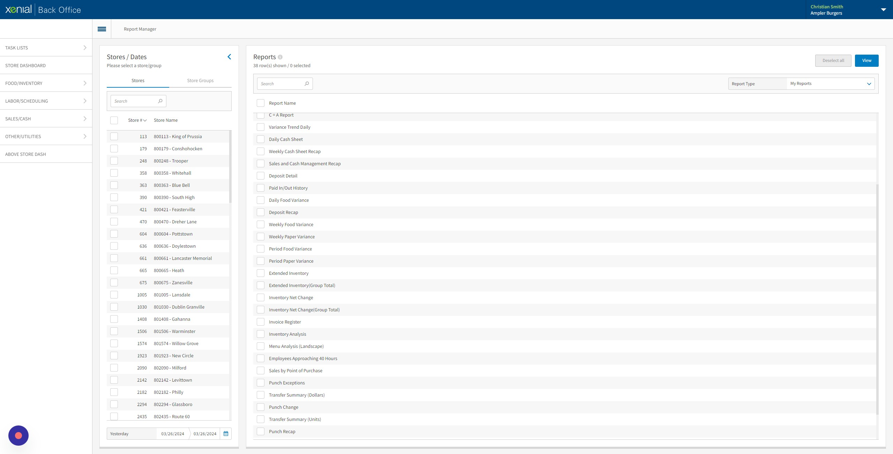
-
4Click the calendar icon.
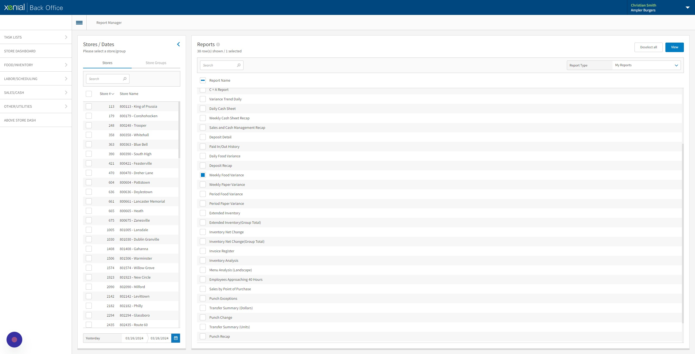
-
5Select date range you would like to view.
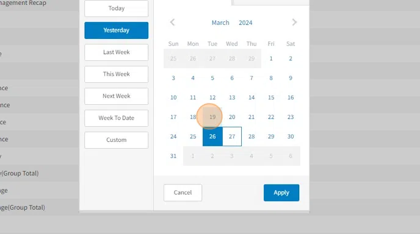
-
6Click "Apply"
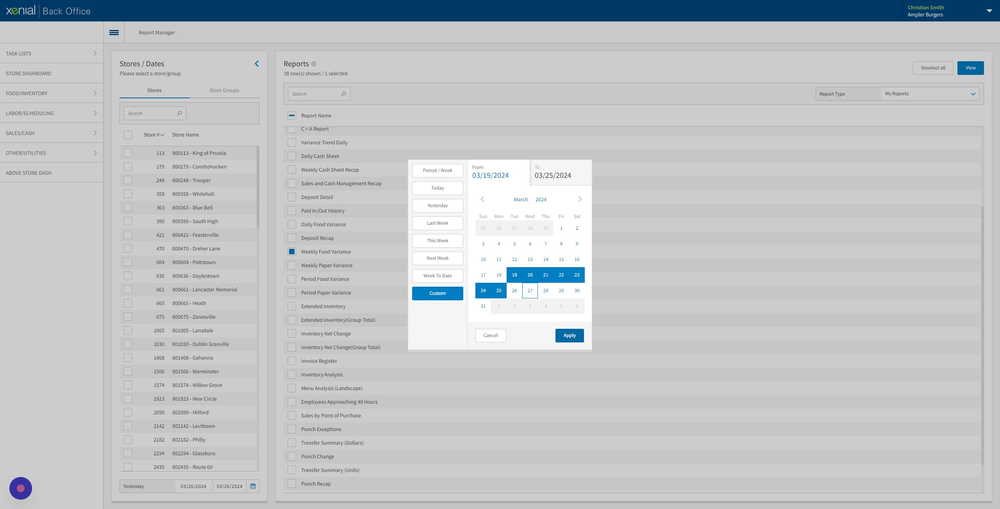
-
7Click the restaurant(s) you would like to view. A maximum of 20 can be ran at a time.
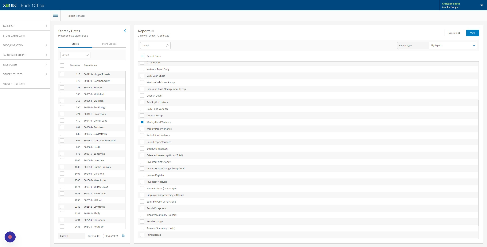
-
8Click "View"
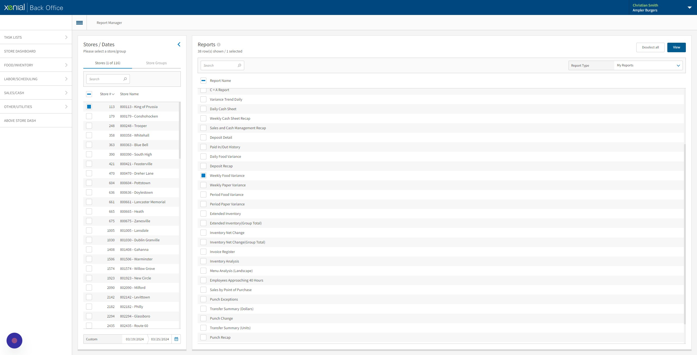
Reading the Report
-
Warning
For step 9-12, the numbers in the columns between the 2 large circles (like the individual number circled) are in individual units, not $ amounts.
-
9This is your ideal usage of your sales & and the amount in $s. This number is from all the items you have sold through the time frame you selected. The bottom units are % of sales and $ amount.
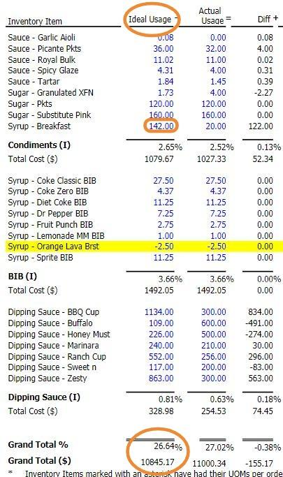
-
10This is your actual usage of your sales & the amount in $s. This number is from all the items you have sold, wasted, and are missing through the time frame you selected. The bottom units are % of sales and $ amount.
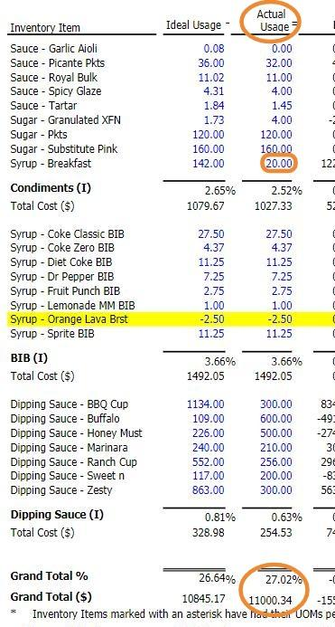
-
11Menu Waste is the amount of waste rang in through the terminals through the time frame you selected. The bottom units are % of sales and $ amount. Raw Waste is the amount of waste input on RTI or XBO through the time frame you selected. The bottom units are % of sales and $ amount.
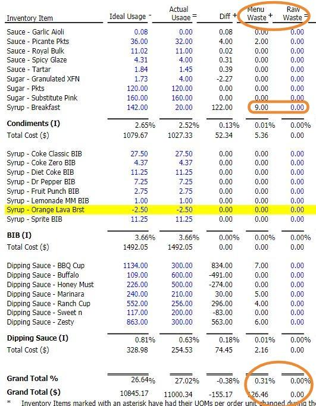
-
12Variance is the amount of product over/short that is not accounted for. This number is your ideal usage subtracted by your actual usage subtracted by your waste. The bottom units are % of sales and $ amount. The units in the column (like in the rectangle) is the missing or overage of the product.
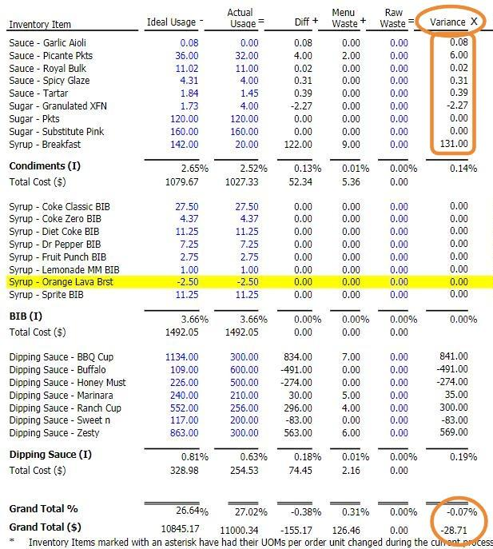
-
13Cost per Unit shows the Cost of each unit used on this report.
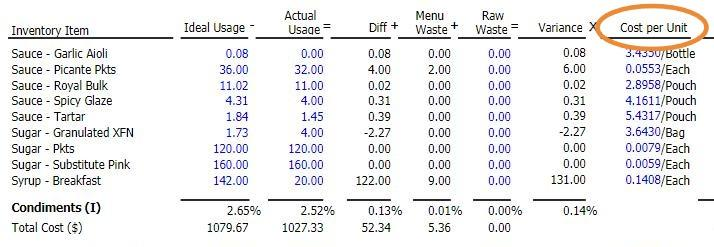
-
14Variance $ Over/Short is how much we are over or short of that product in $s. The bottom units are % of sales and $ amount. The 2 numbers combined will match your Variance.
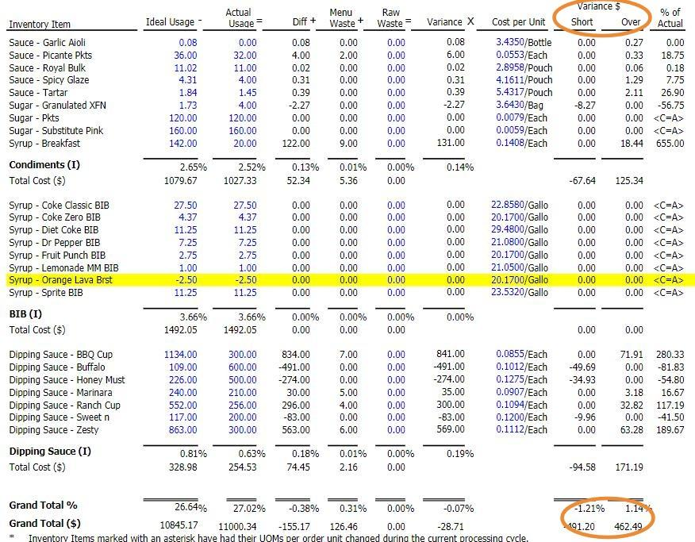
-
15% of Actual is your how much of your Actual Usage is from your Variance.
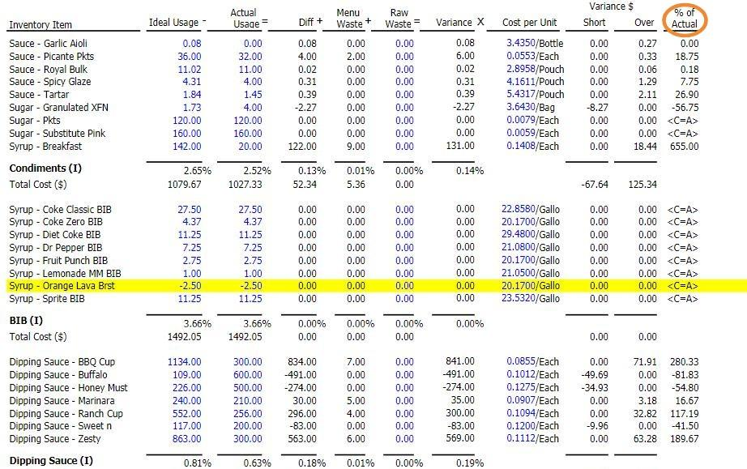
-
16Anything highlighted in yellow indicates that you have grew over 100% on the product compared to your counts last week.
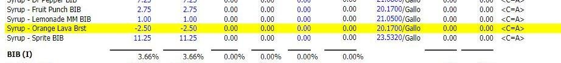
-
17Anything marked as <C=A> are items where Ideal Usage is forced to match Actual Usage. These usually are because there is no recipe attached to the item.
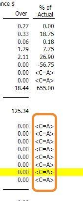
-
Warning
Due to <C=A> having Ideal Usage match Actual Usage this causes variance to always be 0 for those items. Make sure to verify that we do not have heavy growth or loss in product by looking at the "Ideal Usage"/"Actual Usage" columns for high or negative usages. You may also view the <C=A> Report to view any high or low usages for all of these items.
Highest/Lowest 5 $ and %
-
18These are the 5 items missing the most in $s through the time frame you selected.
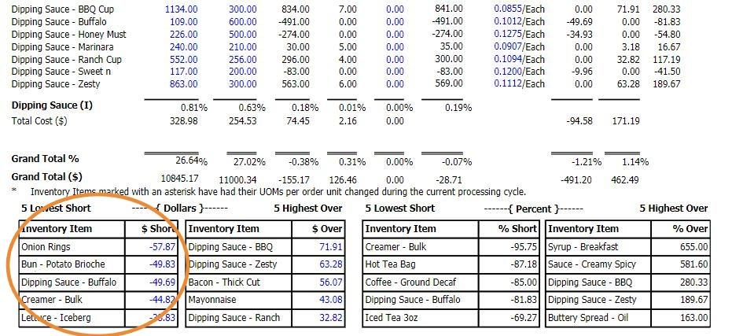
-
19These are the 5 items over the most in $s through the time frame you selected.
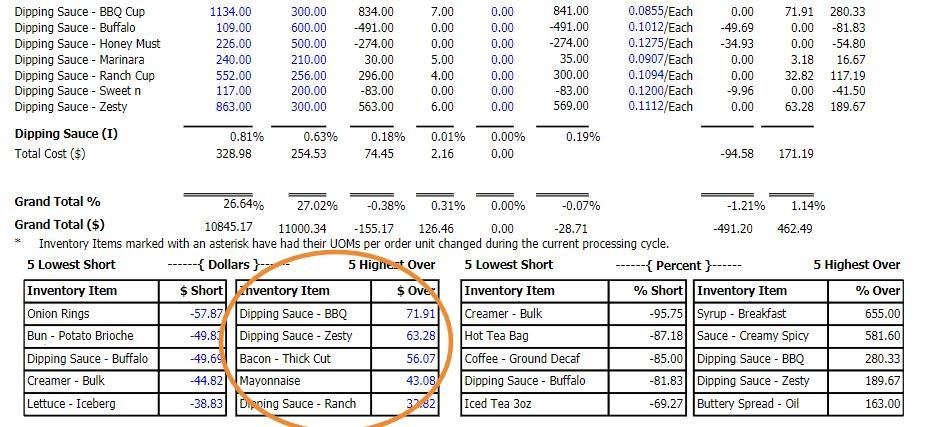
-
20This is the 5 items missing the most compared to your ideal usage in a % through the time frame you selected.
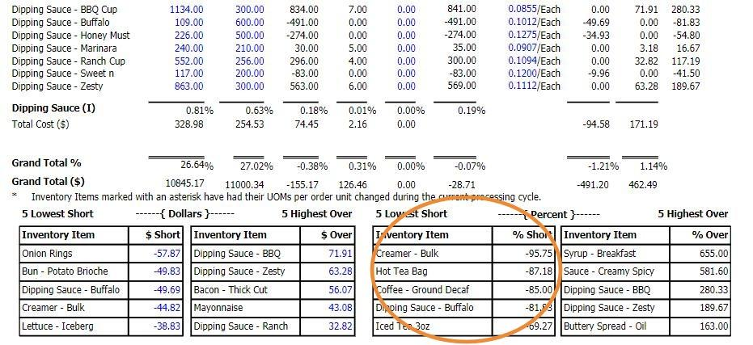
-
21This is the 5 items over the most compared to your ideal usage in a % through the time frame you selected.
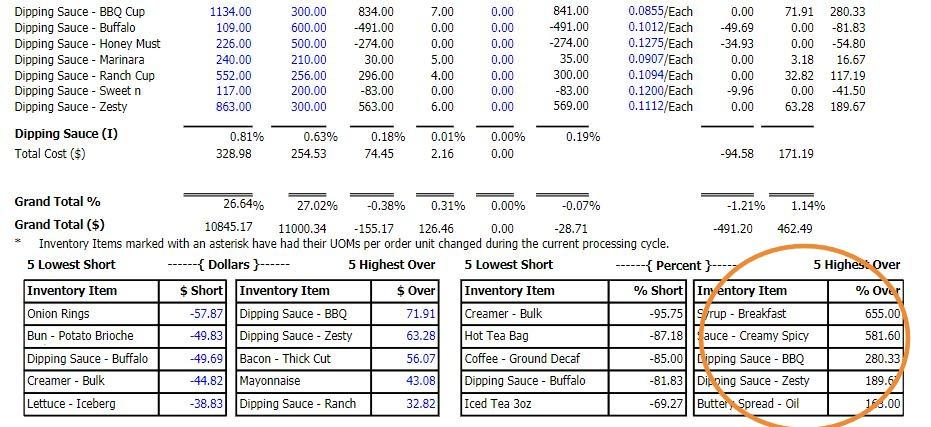
Ideal/Actual Usage Breakdowns
-
22To view the breakdown of where your Ideal Usage came from, click the blue number in the "Ideal Usage" column.
-
23Breakdown of the Ideal Usage.
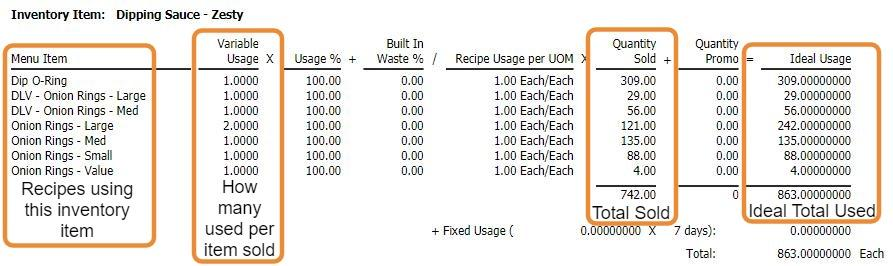
-
24To view the breakdown of everything going into your Actual Usage, click the blue number in the "Actual Usage" column.
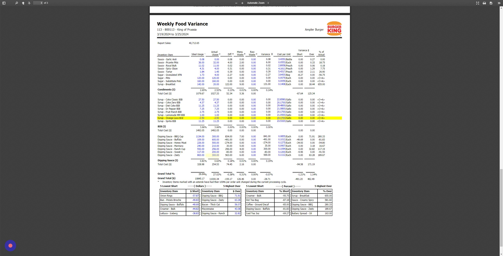
-
25Breakdown of the Actual Usage.
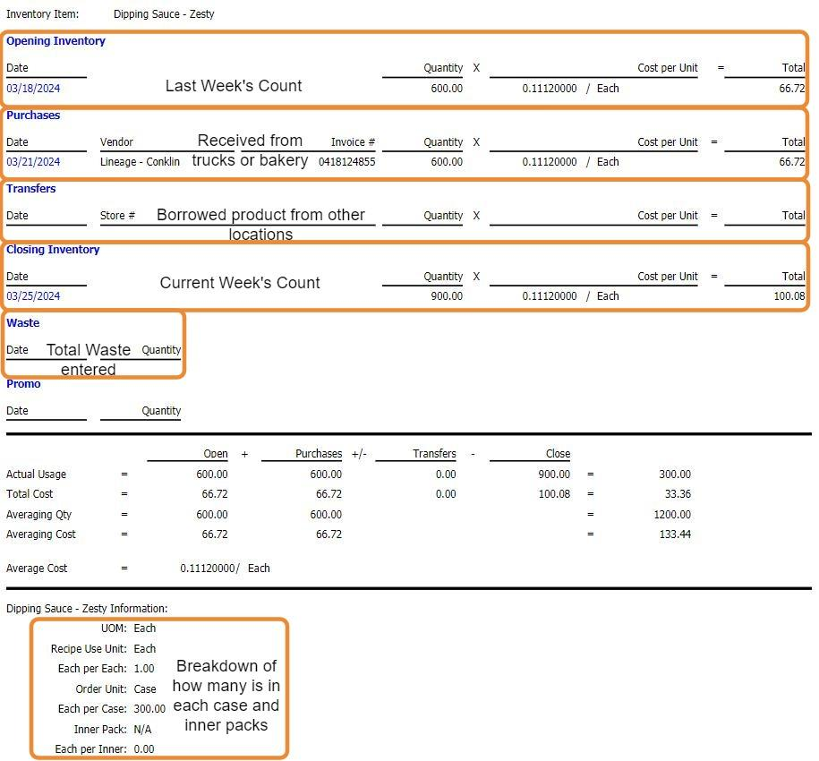
C=A Report
-
26To generate the <C=A> report, repeat steps 1-8, replacing step 3 with this step.
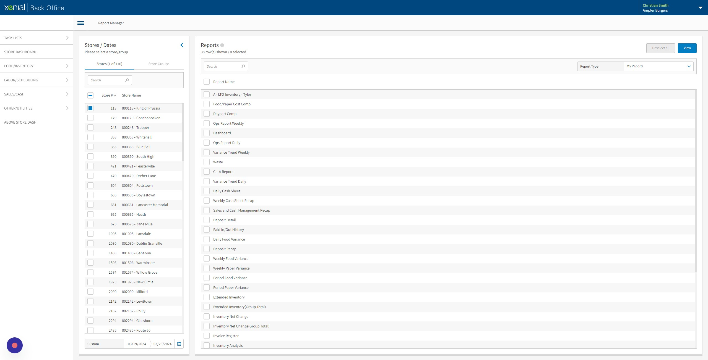
-
27Reading C=A Report.
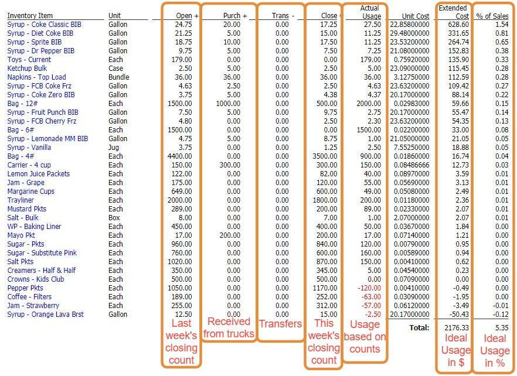